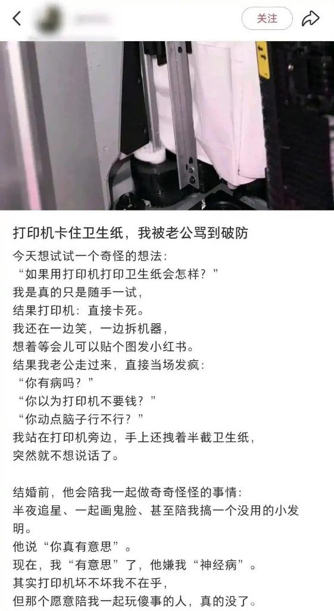

たたなこ🏳️⚧️🍥
@tatanakots
@LIGHTSEEKER1984 可是打印机能不能打卫生纸这个问题真的需要试一下才能知道嘛，万一成功了呢？
失败了也没让她老公来修，不是自己在拆打印机取纸嘛，自己做的事情自己收拾好烂摊子，完全没问题啊

The Gulag Bot
@LIGHTSEEKER1984
女人这种生物能活到今天，真是奇迹
没有男人兜底接盘，早就被淘汰了
竟然把卫生纸当今打字机里面，毫无常识和正常智力
都多大岁数了，还和不懂事的孩子一样，一群被惯坏的巨婴
女人真的是非蠢即坏
这大概是女人想离婚分财产，故意制造矛盾，没事找事，来激怒男性
这不，帖文最后狐狸尾巴露出来了 https://t.co/kiD4Ov6Zwi